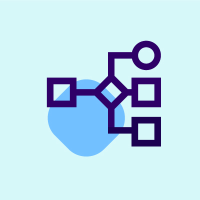
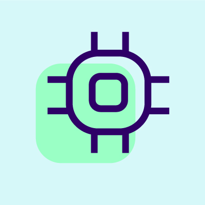
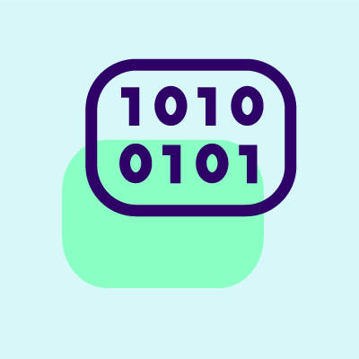
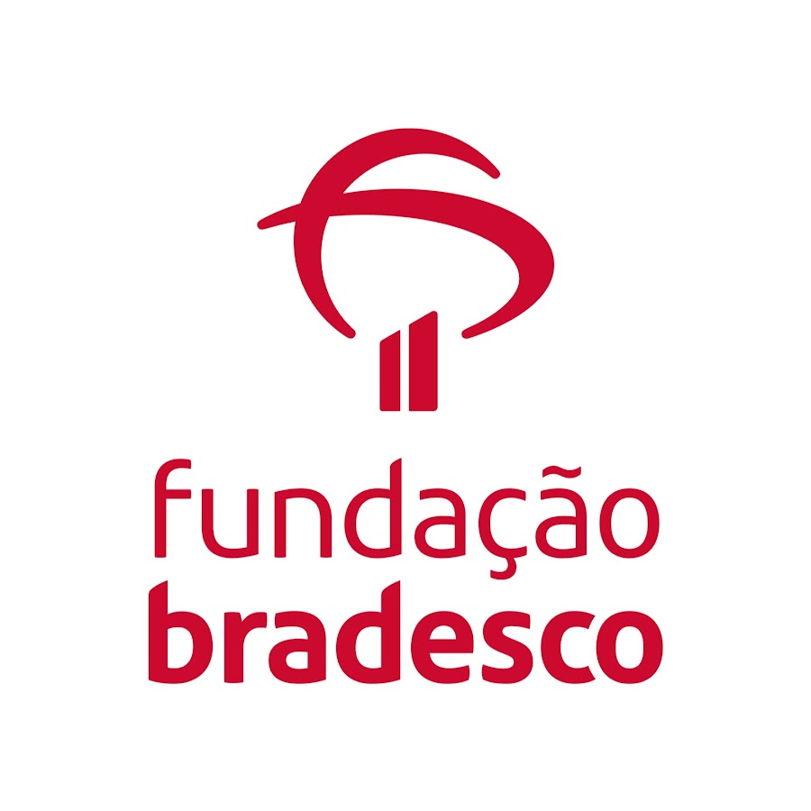
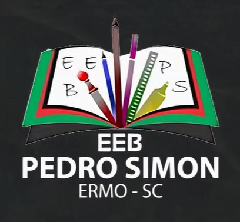

Um estudante de programação, com foco em HTML, CSS e Javascript
Gosto de tecnologia e estou sempre em busca de evoluir
e desenvolver novas habilidades, também estudo o idioma inglês

Curso em Vídeo
Ensina os fundamentos da lógica de programação, trabalhando conceitos como variáveis, operadores, condições, repetições, estruturas de dados e criação de algoritmos. A ideia é desenvolver o raciocínio lógico para depois facilitar o aprendizado de linguagens de programação.

Curso em Vídeo
Aborda os principais componentes de um computador, montagem e manutenção, funcionamento de processadores, memórias, armazenamento, placas-mãe e demais componentes de hardware.

Curso em Vídeo
Aborda os sistemas de numeração, como binário, decimal, octal e hexadecimal, ensinando conversões entre eles e sua aplicação na computação.
Curso em Vídeo
Aborda os principais conceitos de redes, como endereçamento IP, protocolos, dispositivos de rede, modelos OSI e TCP/IP, DNS, DHCP, roteadores e comunicação entre computadores.

Fundação Bradesco
Aborda conceitos básicos de tecnologia da informação, incluindo hardware, software, sistemas operacionais, redes, segurança e o funcionamento dos principais recursos de TI.
Fiber School
Aborda os fundamentos da fibra óptica, incluindo tipos de fibra, componentes, instalação, fusão, testes e manutenção de redes ópticas.
Fiber School
Aborda os fundamentos do protocolo TCP/IP, incluindo endereçamento IP, comunicação entre dispositivos, protocolos de rede e conceitos básicos de configuração e funcionamento de redes.
Atuação como Apontador de Dados , realizando a coleta e organização de amostras de fumo para análises de qualidade, seguindo os procedimentos estabelecidos para garantir a precisão das informações.
Atuação como Suporte Técnico , em uma provedora de internet, realizando configuração e suporte a aparelhos, resolução de problemas técnicos e atendimento aos clientes. Também atuo em rotinas administrativas e financeiras.
Início: Fev/2026 - Fim fev/2030
Ensina a desenvolver, testar e manter sistemas de software, abordando programação, bancos de dados, desenvolvimento web, engenharia de requisitos e gestão de projetos. Também trabalha conceitos de arquitetura de software, metodologias de desenvolvimento, qualidade, segurança e boas práticas para criação de sistemas.

Término em 2025
proporciona uma formação geral, desenvolvendo conhecimentos em áreas como matemática, português, ciências humanas e da natureza. Também contribui para o desenvolvimento do pensamento crítico, comunicação, resolução de problemas e preparação para o mercado de trabalho e para o ensino superior.